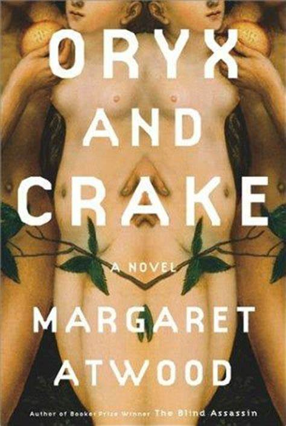

<!DOCTYPE html>
<html>

    <head>
        <title>My Favourite Book</title>
    </head>
</html>
    <body>
        <h1>
            Oryx & Crake
        </h1>
            <h2>by Margaret Atwood</h2>
<hr />
<p>
    Synopsis: As the story opens, the narrator, who calls himself Snowman,
    is sleeping in a tree, wearing a dirty old bedsheet, mourning the loss 
    of his beautiful and beloved Oryx and his best friend Crake, and slowly
    starving to death. In a world which science-based corporations have
    recently taken mankind on an uncontrolled genetic-engineering ride,
    he now searches for supplies in a wasteland. insects proliferate
    and pigoons and wolvogs ravage the Pleeblands, where ordinary people once
    lived, and the Compounds that sheltered the extraordinary. As he tries to
    piece together what has taken place, the narrative shifts to decades earlier.
    How did everything fall apart so quickly? Why is Snowman left with nothing
    but his bizarre memories--alone except for the more-than-perfect,
    green-eyed Children of Crake, who think of him as a kind of monster?
    He explored the answers to these questions in the double journey he takes--into
    his own past and back to Crake's high-tech bubble dome, where the Paradice Project
    unfolded and the world came to grief.
</p>
<p>with breathtaking command of her shocking material and with her customary
    sharp wit and dark humour, Atwood projects us into an outlandish yet
    wholly believable realm populated by characters who will continue to 
    inhabit your dreams long after the last chapter. This is Margaret Atwood
    at the absolute peak of her powers.
</p>
<p>
"Immortality," said Crake, "is a concept. If you take 'mortality' as
being, not death, but the foreknowledge of it and the fear of it, then 'immortality'
is the absence of such fear."
</p>

<a href="about.html">About the Author</a>  
<hr />

</body>
    </html>